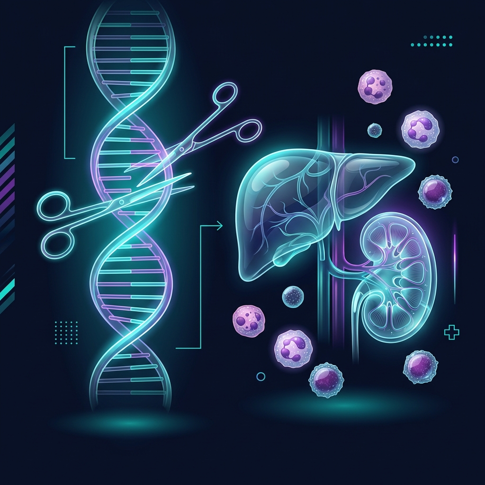

首例豬到人原位多器官聯合移植：打破跨物種排斥的適應圖譜與早期免疫防線
當我們試圖用編輯過的豬器官完整替代人體臟器，跨物種的免疫與代謝系統會發生什麼衝突？解析最新人體遺體模型研究中的基因工程、單細胞測序與系統代謝同化軌跡。

長期以來，器官短缺一直是器官移植醫學面臨的最大瓶頸。為了解決這一难题，「異種移植」（Xenotransplantation）——即將動物（通常為豬）的器官移植到人體中，被視為最具潛力的終極解決方案。然而，人類免疫系統極為敏感，面對跨物種器官時，會立刻發動毀滅性的「超急性排斥反應」（Hyperacute Rejection, HAR），在幾分鐘到幾小時內摧毀移植臟器。
最新發表於國際頂尖醫學期刊 Med 的研究（Liao et al., 2026），首次在腦死人體遺體模型中，成功實施了**原位完整肝臟合併雙側腎臟異種移植**（xeno-CLKT）。研究團隊利用基因編輯技術設計的供體豬，不僅成功維持移植臟器生理功能達 5 天，更透過高維度的系統生物學手段（單細胞測序、代謝組學），為我們揭示了跨物種適應的早期圖譜。
一、六基因編輯平台：拆除超急性排斥的引信
異種移植的首要任務是讓移植器官在人體血液灌流下存活。這項研究的供體豬（一隻 427 天大的巴馬香豬）經過了 6 個基因的精密修改，包含 3 個「基因敲除」與 3 個「人源基因轉入」：
1. 敲除三大物種屏障（Knockout）
- GGTA1 敲除：消除 $\alpha$-Gal 碳水化合物抗原，這是防範人體預存天然抗體發動超急性排斥最關鍵的一步。
- CMAH 敲除：消除 Neu5Gc 抗原。人類因基因突變缺乏 CMAH 酶，因此會對 Neu5Gc 產生排斥應答。
- B4GALNT2 敲除：消除 SDa 抗原，徹底清除人體抗體識別的主要靶點。
2. 導入人體保護蛋白（Knock-in）
- hCD46 & hCD55：兩者皆為人類補體調節蛋白，能有效抑制人體補體級聯反應的激活，防止細胞溶解與血管內皮破壞。
- hTHBD（人類血栓調節蛋白）：由於豬-人凝血系統不相容，異種移植極易並發微血管血栓形成。hTHBD 的表達能激活蛋白 C，從而發揮強效抗凝血與抗炎作用，保護移植器官血管內皮。
| 編輯類型 | 目標基因 | 主要功能 | 解決之臨床瓶頸 |
|---|---|---|---|
| Knockout (敲除) | GGTA1 / CMAH / B4GALNT2 | 消除豬源性碳水化合物抗原 | 防範超急性排斥反應 (HAR) |
| Knock-in (轉入) | hCD46 / hCD55 | 表達人類補體調節蛋白 | 阻止補體激活與細胞溶解 |
| Knock-in (轉入) | hTHBD | 表達人類血栓調節蛋白 | 預防微血管血栓形成 (TMA) |
二、$S100A12^+$ 嗜中性球：早期免疫防線的「核心樞紐」
雖然六基因編輯成功壓制了體液免疫的超急性排斥，但細胞層級的早期炎症反應依然會被激活。研究團隊在移植後不同時間點（最長至 72 小時），對受體外周血及移植肝腎組織進行了單細胞 RNA 測序（scRNA-seq）。
分析發現，在 PBMCs 和移植組織中，一類特殊的**$S100A12^+$ 嗜中性球（Neutrophils）**出現了顯著的擴增與浸潤：
- 細胞狀態特徵：這群嗜中性球不僅高度表達鈣結合蛋白 S100A12（反映高度發炎激活狀態），同時表現出強烈的凝血活化與血小板相互作用特徵。
- ADGRE 通訊軸：透過 CellChat 細胞通訊網絡分析，研究人員發現這群 $S100A12^+$ 嗜中性球與宿主的單核細胞、巨噬細胞、NK/T 細胞之間，主要透過 `ADGRE` 通訊通路 進行對話，成為調節早期異種移植物損傷的網絡中心。
三、系統代謝組學：驚人的「宿主代謝同化」軌跡
除了免疫系統的對抗，另一個核心問題是：豬的器官在化學運作上，能適應人的內環境嗎？研究團隊利用液相色譜-質譜聯用（LC-MS/MS）技術，對受體的膽汁、尿液、血漿及組織進行了**非靶向代謝組學分析**，共捕捉到 3,352 種代謝物。
1. 哨兵代謝物：牛磺膽酸（Taurocholic Acid）
在膽汁基質中，移植後的**牛磺膽酸**呈現出漸進式的線性增加。牛磺膽酸是反映肝臟膽汁酸合成與主動排泄功能的「哨兵分子」。這表明移植的豬肝臟能成功利用受體的膽固醇前體，合成並正常排泄膽汁，具備完整的肝臟代謝合成活性。
2. 宿主代謝同化（Host Assimilation）
最有趣的發現來自對受體尿液和血漿代謝模式的相似度分析。隨著時間推移，受體系統的代謝特徵逐漸朝**受體移植前的基準線（Human baseline）**靠攏，而不是向供體豬的特徵漂移。
這說明，雖然臟器來自豬，但在全身體液循環系統的緩衝與反饋調節下，外周代謝物迅速被宿主系統「同化（Assimilation）」，這為維持全身代謝穩態提供了強有力的支持。
四、邁向臨床的關鍵挑戰與局限性
儘管本研究在學術上取得了巨大成功，但要真正走入臨床應用，仍有幾個難題需要被解決：
- 遺體模型的生理不穩定：腦死模型由於神經-內分泌系統瓦解，會伴隨嚴重的細胞因子風暴（Cytokine Storm），這可能放大了早期免疫激活的訊號。
- 時間窗口的限制：受限於 decedent somatic condition，觀察時間僅維持了約 5 天。這段時間完全無法觀察到在移植後數周至數月才會發生的「急性細胞性排斥」與「慢性抗體介導排斥」。
- 高劑量免疫抑制劑的副作用：為了壓制排斥，受體接受了極高劑量的免疫抑制劑，這些藥物對代謝系統的干擾需要更長的觀察期來進行校正。
參考文獻
- Liao, J., An, S., Dong, J., Li, S., et al. (2026). First human decedent model of orthotopic multi-organ xenotransplantation: Whole liver and bilateral kidneys from a six-gene-edited pig. Med, 7, 101148. https://doi.org/10.1016/j.medj.2026.101148
- Cooper, D. K., Ekser, B., & Tector, A. J. (2015). Immunobiology of xenotransplantation. International Journal of Surgery, 23, 268-275. https://doi.org/10.1016/j.ijsu.2015.06.059